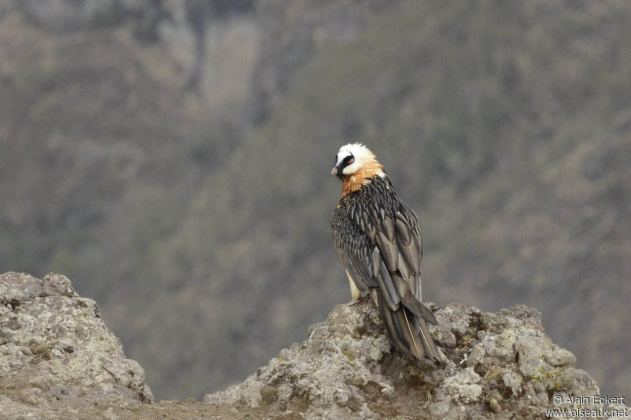
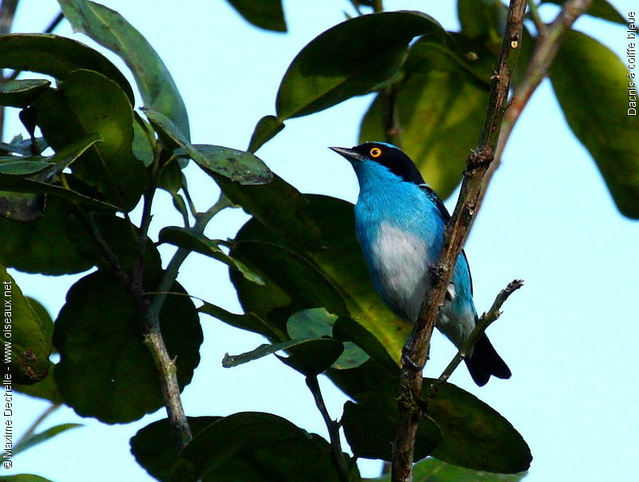

3 oiseau du monde
L'Acanthize nain

L'Acanthize nain (Acanthiza nana) est une espèce de passereau
que l'on rencontre en Australie.
C'est une espèce
protégée
sous la convention National Parks and Wildlife Act, 1974.
C'est un petit oiseau à l'allure élégante. Il est discret, mais sait s'imposer. Il aime la proximité des autres
oiseaux,
il est rarement mis à l'écart de son groupe
Le Gypaète barbu
Le Gypaète barbu (Gypaetus barbatus) est une des quatre grandes espèces de vautours européens. C'est la seule espèce du genre Gypaetus. Il appartient à l'ordre des Accipitriformes et à la famille des Accipitridés.
hautLe Dacnis à coiffe bleue
Le Dacnis à coiffe bleue (Dacnis lineata) est une espèce de passereau de la famille des Thraupidae. On le trouve dans les forêts humides du bassin de l'Amazone.
haut